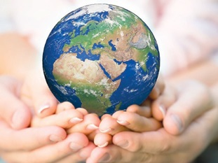
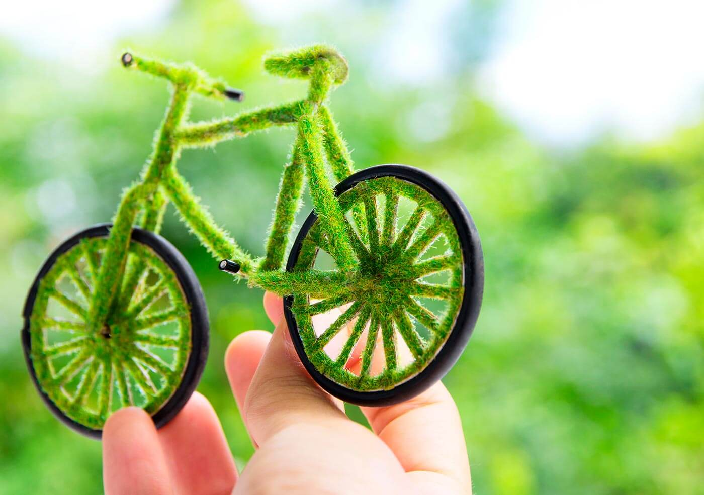
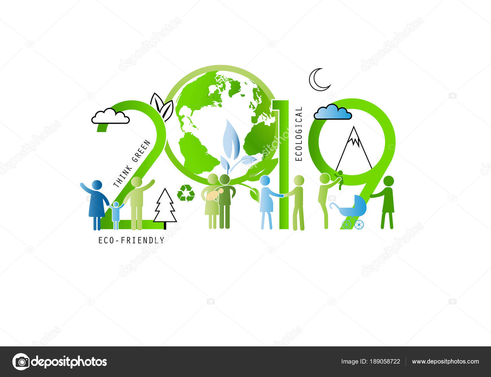
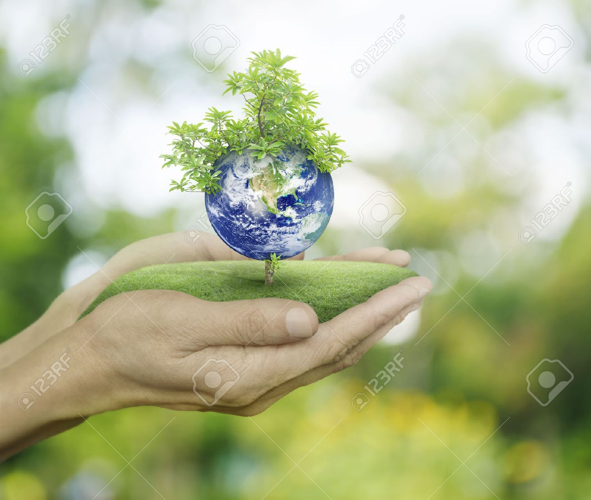
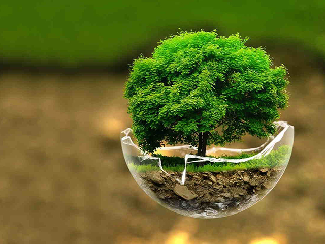

Día Internacional de la Madre Tierra 22de Abril

- 


- 
- 
- 
- 
realizado por
Morelia Castillo Alvarez
"4°""E"
Especialidad:
Programación
Submódulo:
Desarrolla Aplicaciones Móviles
Docente:
Lic.José Antonio Gómez Hernández
"4°""E"
Programación
Desarrolla Aplicaciones Móviles
Lic.José Antonio Gómez Hernández
Celebramos el dia internacional de la madre tierra para recordar que el planeta y sus ecosistemas nos dan la vida y el sustento. Con este dia, asumimos, ademas, la responsabilidad colectiva, como nos recordaba la Declaracion de Rio de 1992, de fometar esta armonia con la naturaleza y la madre tierra. Este dia nos brinda tambien la oportunidad de concienciar a todos lo habitantes del planeta acerca de los problemas que afectan a la tierra y a las diferentes formas de vida que en el se desarrollan.
Hoy celebramos el Día Mundial de la Madre Tierra, nuestra casa, el suelo que pisamos, el aire que respiramos, lo que comemos y lo que bebemos.El origen de esta celebración comenzó en 1970, cuando 20 millones de norteamericanos comenzaron a manifestarse por un medio ambiente sano y sustentable.Fue en 2009 cuando la Organización de las Naciones Unidas declaró el 22 de abril como el Día Mundial de la Madre Tierra. Este año, la celebración está dedicada a llevar a cabo nuevas acciones en la lucha contra el Cambio Climático.
"Madre Tierra" es una expresión común utilizada para referirse al planeta Tierra en diversos países y regiones, lo que demuestra la interdependencia existente entre los seres humanos, las demás especies vivas y el planeta que todos habitamos.
El Diálogo se realizó con el objetivo de inspirar a los ciudadanos y las sociedades a reconsiderar la relación que mantienen con la naturaleza. "Mejorar la base ética de la relación entre la especie humana y la Tierra en el contexto del desarrollo sostenible no es solo beneficioso, sino también necesario."
La «sostenibilidad del modelo económico, las políticas centradas en la justicia social y ambiental y las medidas para generar un nuevo modelo de producción y consumo, con generación de empleo ligado al cuidado y mejora ambiental» marquen el camino en la nueva etapa política.